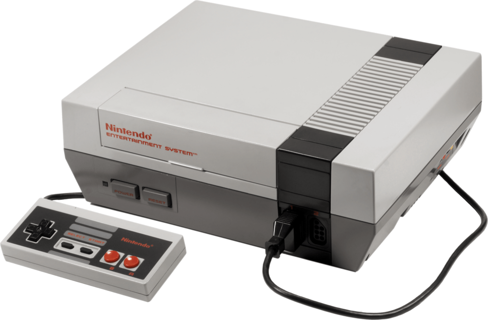
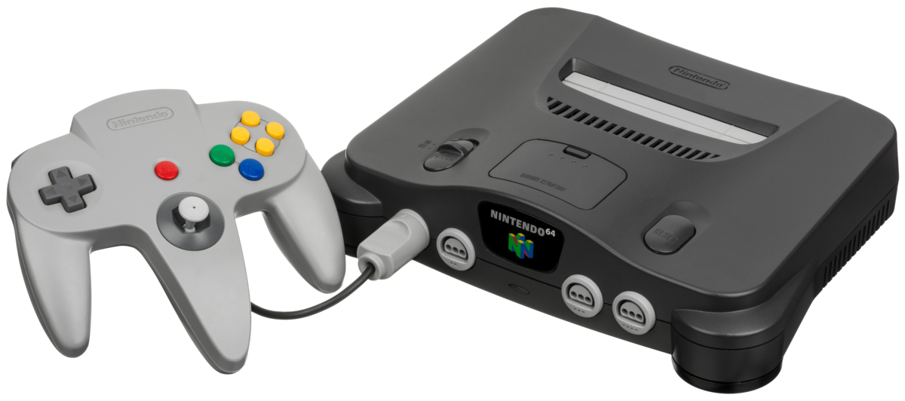
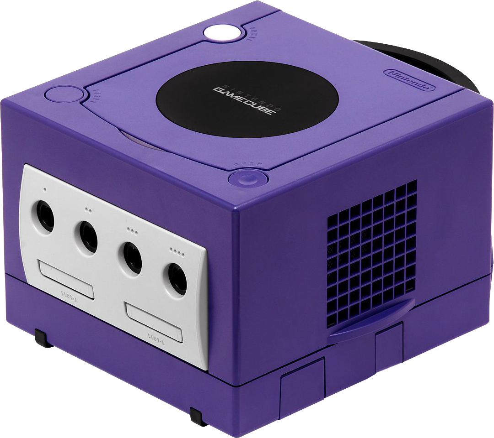
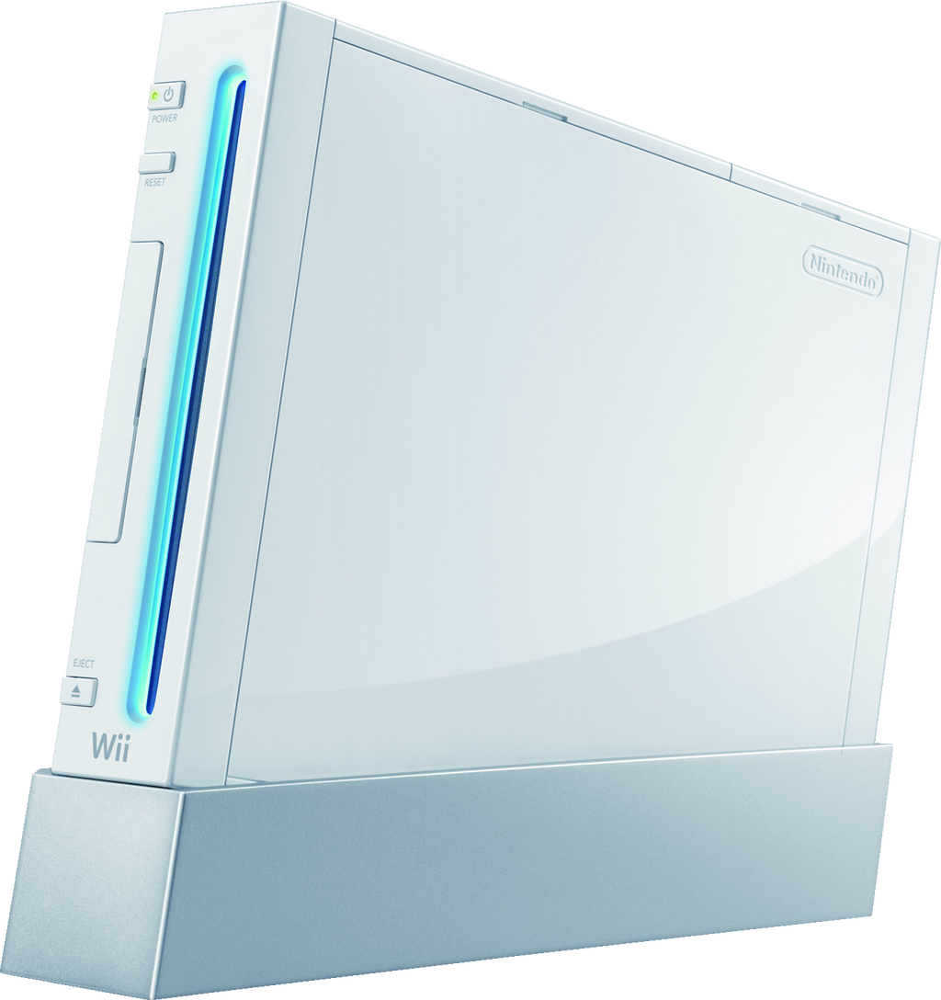

Home
Home 
 Xbox
Xbox 
|  | Nintendo Entertainment System: The Nintendo Entertainment System (NES) is an 8-bit home video game console developed and manufactured by Nintendo. It was first released in Japan in 1983 and later in North America in 1985. The console features a distinctive gray and black design and comes with two rectangular controllers. It supports a wide range of game cartridges, including popular titles like "Super Mario Bros.," "The Legend of Zelda," and "Metroid." The NES played a significant role in reviving the video game industry after the North American video game crash of 1983 and became one of the most successful and influential consoles of all time. Today, the NES is considered a classic and remains a favorite among retro gaming enthusiasts. |
|  | Nintendo 64: The Nintendo 64 Console, commonly known as N64, was a home video game console developed and produced by Nintendo. It was released in 1996 and was the successor to the Super Nintendo Entertainment System. One of the most significant features of the N64 was its innovative 64-bit central processing unit, which allowed for improved graphics and gameplay compared to its predecessors. The console's controller was also unique, featuring a central joystick and trigger buttons on the back. The N64 was home to many classic games such as Super Mario 64, The Legend of Zelda: Ocarina of Time, and GoldenEye 007, which are still highly regarded by gamers today. The console also supported multiplayer gaming, allowing up to four players to compete or cooperate in games. Despite being a commercial success and a beloved console among many gamers, the N64's lifespan was relatively short, as it was succeeded by the Nintendo GameCube in 2001. However, its impact on the gaming industry and its enduring legacy make it a cherished piece of gaming history. |
|  | GameCube: The GameCube was a home video game console developed and produced by Nintendo, and was released in 2001. It was the successor to the Nintendo 64 and was the first Nintendo console to use optical discs instead of cartridges. The GameCube was notable for its compact design and distinctive cube-shaped form factor. It also had a unique controller design featuring a large central button and a built-in rumble feature. Additionally, the console's handle made it easy to transport. Some of the most popular games on the GameCube included Super Smash Bros. Melee, The Legend of Zelda: The Wind Waker, and Mario Kart: Double Dash!!. It also supported multiplayer gaming, both locally and online, with the use of a broadband adapter. Despite being outsold by competitors like the PlayStation 2 and Xbox, the GameCube remains a beloved console among Nintendo fans for its unique design and impressive library of games. |
|  | Wii: The Wii was a home video game console developed and produced by Nintendo and released in 2006. It was a revolutionary console that introduced motion control to gaming, allowing players to interact with games using physical gestures and movements. The console was designed to be inclusive and accessible to a wide audience, including casual gamers and families. It was known for its unique Wii Remote controller, which featured a motion sensor and was used for a variety of games. The Wii had a large and diverse library of games, including first-party titles like Wii Sports and Super Mario Galaxy, as well as popular third-party games like Just Dance and Guitar Hero. It also supported online multiplayer and had a virtual console, allowing players to purchase and play classic games from previous Nintendo consoles. Despite being succeeded by the Wii U and later the Nintendo Switch, the Wii remains a significant console in gaming history for its innovative approach to gameplay and its impact on the industry. |
 |
Wii U: The Wii U was a home video game console developed and produced by Nintendo and released in 2012. It was the successor to the Wii and was notable for its unique GamePad controller, which featured a touchscreen in the center. The GamePad allowed for asymmetric gameplay, where players could use the touchscreen to interact with the game in different ways than they would with a traditional controller. It also allowed for off-TV play, where games could be played on the GamePad screen without using a TV. Some of the most popular games on the Wii U included Super Mario 3D World, The Legend of Zelda: Breath of the Wild, and Mario Kart 8. The console also had a social aspect, with features like Miiverse that allowed players to share their gameplay experiences and connect with others. Despite being praised for its unique features, the Wii U was not as commercially successful as Nintendo's previous consoles, and it was eventually discontinued in 2017. However, it remains a significant console in gaming history for its innovative ideas and the impact it had on Nintendo's future console development. |
 |
Nintendo Switch:The Nintendo Switch is a hybrid video game console developed and produced by Nintendo, released in 2017. It can be used as both a home console and a portable device, with a tablet-like screen and detachable controllers called Joy-Cons. The Switch has a large and diverse library of games, including first-party titles like The Legend of Zelda: Breath of the Wild and Super Mario Odyssey, as well as popular third-party games like Fortnite and Minecraft. It also has a strong emphasis on local multiplayer, with the ability to connect multiple Switch consoles for co-op and competitive play. One of the most significant features of the Switch is its versatility, allowing players to seamlessly transition between playing on a TV and playing on the go. The console also has unique features like HD rumble and motion control, which add to the gameplay experience. The Switch has been a commercial success for Nintendo, selling over 100 million units as of September 2021. It has also received critical acclaim for its innovative design and impressive library of games, making it a significant console in gaming history. |
 |
Nintendo Games: Nintendo games are video games developed and produced by Nintendo, a Japanese gaming company founded in 1889. Nintendo is one of the oldest and most influential gaming companies in the world, and has produced some of the most beloved and iconic games of all time. Some of the most popular and well-known Nintendo games include Super Mario Bros., The Legend of Zelda, and Pokémon. These franchises have become household names and have sold millions of copies worldwide. Nintendo games are known for their innovative gameplay mechanics, unique art styles, and memorable characters. Many Nintendo games feature bright colors, whimsical music, and a sense of fun and playfulness. Nintendo is also known for its family-friendly approach to gaming, with many of its games designed to be accessible to players of all ages and skill levels. Nintendo games often feature co-op and multiplayer modes, allowing players to play together and share the fun. Overall, Nintendo games have had a significant impact on the gaming industry and continue to be beloved by gamers of all ages. |